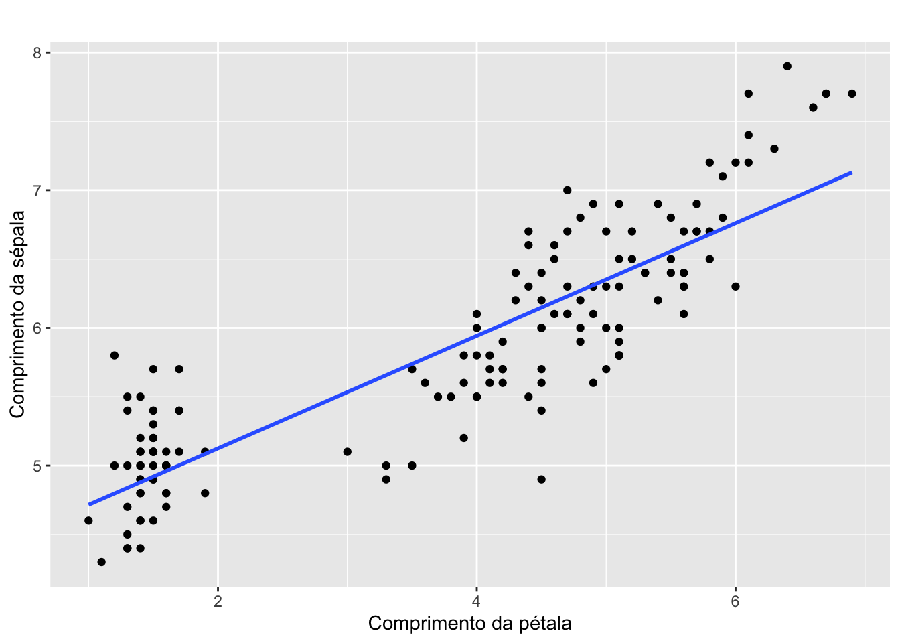
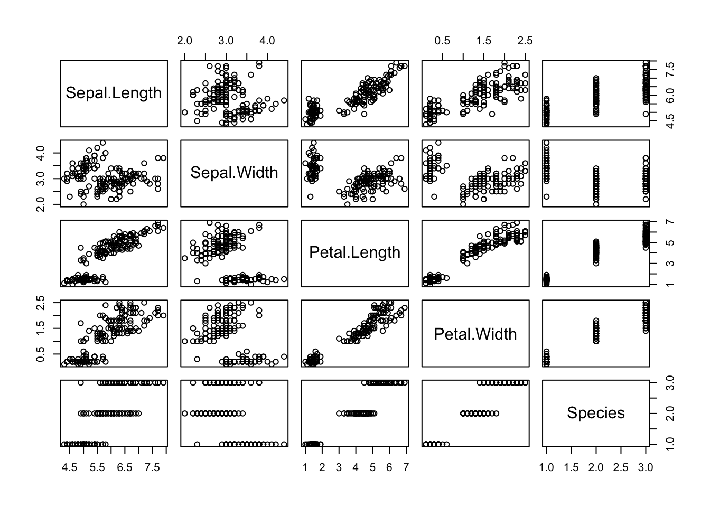
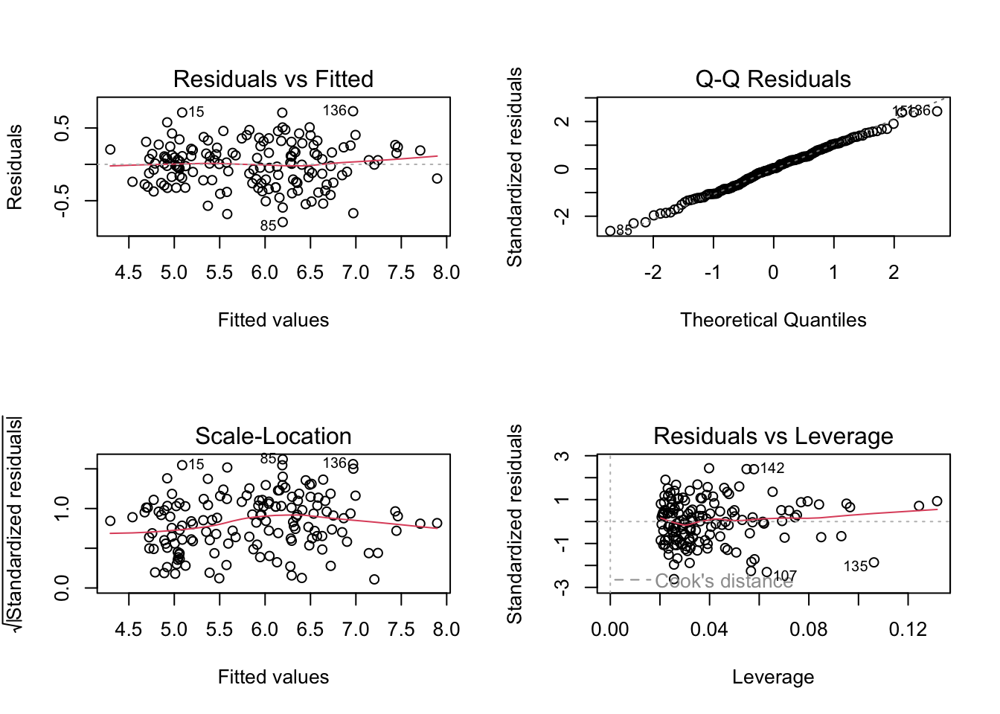

Rows: 150
Columns: 5
$ Sepal.Length <dbl> 5.1, 4.9, 4.7, 4.6, 5.0, 5.4, 4.6, 5.0, 4.4, 4.9, 5.4, 4.…
$ Sepal.Width <dbl> 3.5, 3.0, 3.2, 3.1, 3.6, 3.9, 3.4, 3.4, 2.9, 3.1, 3.7, 3.…
$ Petal.Length <dbl> 1.4, 1.4, 1.3, 1.5, 1.4, 1.7, 1.4, 1.5, 1.4, 1.5, 1.5, 1.…
$ Petal.Width <dbl> 0.2, 0.2, 0.2, 0.2, 0.2, 0.4, 0.3, 0.2, 0.2, 0.1, 0.2, 0.…
$ Species <fct> setosa, setosa, setosa, setosa, setosa, setosa, setosa, s…Bioestatística Usando o R
11 Regressão Linear
Para exemplificação da técnica de regressão linear, utilizaremos a base de dados iris, do pacote data.
iris é uma base de dados de espécies de flores da família das Iridáceas chamada Iris. Existem três classes nesse banco de dados: a Iris-setosa, a Iris-versicolour e a Iris-virginica, e possui para cada classe 50 instâncias, totalizando 150 instâncias. As variáveis presentes do banco são:
Sepal.Length: Comprimento da sépala (variável dependente).
Sepal.Width: Largura da sépala.
Petal.Length: Comprimento da pétala.
Petal.Width: Largura da pétala.
Species: Espécie da flor (categórica com 3 níveis: setosa, versicolor, virginica).
Base de Dados
11.1 Regressão Linear Simples
Considere que nosso interesse seja prever o comprimento da sépala (Sepal.Length)a partir do comprimento da pétala (Petal.Length).
- Relação entre as variáveis
Code
iris %>%
ggplot(aes(x = Petal.Length, y = Sepal.Length)) +
geom_point() +
geom_smooth(method = "lm", se = FALSE) +
labs(title = " ",
x = "Comprimento da pétala",
y = "Comprimento da sépala")
- Ajuste do Modelo de Regressão Linear Simples
Code
## Construção do modelo:
modelo <- lm(Sepal.Length ~ Petal.Length,
iris)- Verificação dos Pressupostos
Análise gráfica
Linearidade e homocedasticidade: Resíduos vs Ajustados (deve apresentar distribuição aleatória (sem padrão)).
Normalidade: Q-Q Plot (resíduos devem estar próximos da linha).
Homocedasticidade: Scale-Location (dispersão constante).
Outlier: Resíduos vs Leverage (identificação de valores influentes).
Testes estatísticos
Code
## Normalidade dos resíduos:
shapiro.test(modelo$residuals)
Shapiro-Wilk normality test
data: modelo$residuals
W = 0.99298, p-value = 0.6767Code
## Independência dos resíduos (Durbin-Watson):
car::durbinWatsonTest(modelo) lag Autocorrelation D-W Statistic p-value
1 0.06040577 1.867324 0.352
Alternative hypothesis: rho != 0Code
## Homocedasticidade (Breusch-Pagan):
lmtest::bptest(modelo)
studentized Breusch-Pagan test
data: modelo
BP = 2.7561, df = 1, p-value = 0.09688 Min. 1st Qu. Median Mean 3rd Qu. Max.
-3.074812 -0.733680 -0.037508 0.001119 0.685410 2.489132 Code
## Pontos Influentes
# Calcular a distância de Cook
distancias_cook <- cooks.distance(modelo)
# Identificar observações influentes
observacoes_influentes <- which(distancias_cook > 1)
observacoes_influentesnamed integer(0)- Modelo
Code
# Análise do modelo
summary(modelo)
Call:
lm(formula = Sepal.Length ~ Petal.Length, data = iris)
Residuals:
Min 1Q Median 3Q Max
-1.24675 -0.29657 -0.01515 0.27676 1.00269
Coefficients:
Estimate Std. Error t value Pr(>|t|)
(Intercept) 4.30660 0.07839 54.94 <2e-16 ***
Petal.Length 0.40892 0.01889 21.65 <2e-16 ***
---
Signif. codes: 0 '***' 0.001 '**' 0.01 '*' 0.05 '.' 0.1 ' ' 1
Residual standard error: 0.4071 on 148 degrees of freedom
Multiple R-squared: 0.76, Adjusted R-squared: 0.7583
F-statistic: 468.6 on 1 and 148 DF, p-value: < 2.2e-16Code
# IC para betas
confint(modelo) 2.5 % 97.5 %
(Intercept) 4.1516972 4.4615096
Petal.Length 0.3715907 0.446253911.2 Regressão Linear Múltipla
Agora, vamos prever o comprimento da sépala (Sepal.Length) a partir das demais variáveis presentes no banco de dados.
- Relação entre as variáveis
Code
pairs(iris)
- Ajuste do Modelo de Regressão Linear Múltipla
Code
modelo_completo <- lm(Sepal.Length ~ Sepal.Width + Petal.Length + Petal.Width + Species, data = iris)- Verificação dos Pressupostos

Code
## Normalidade dos resíduos:
shapiro.test(modelo_completo$residuals)
Shapiro-Wilk normality test
data: modelo_completo$residuals
W = 0.99538, p-value = 0.9202Code
## Independência dos resíduos (Durbin-Watson):
car::durbinWatsonTest(modelo_completo) lag Autocorrelation D-W Statistic p-value
1 0.01099141 1.965705 0.732
Alternative hypothesis: rho != 0Code
## Homocedasticidade (Breusch-Pagan):
lmtest::bptest(modelo_completo)
studentized Breusch-Pagan test
data: modelo_completo
BP = 7.3844, df = 5, p-value = 0.1936 Min. 1st Qu. Median Mean 3rd Qu. Max.
-2.6224281 -0.7313210 0.0299754 0.0007302 0.6919805 2.4314594 Code
## Pontos Influentes
# Calcular a distância de Cook
distancias_cook <- cooks.distance(modelo_completo)
# Identificar observações influentes
observacoes_influentes <- which(distancias_cook > 1)
observacoes_influentesnamed integer(0)Code
## Multicolinearidade
#Valores de VIF > 5 sugerem multicolinearidade preocupante.
car::vif(modelo_completo) GVIF Df GVIF^(1/(2*Df))
Sepal.Width 2.227466 1 1.492470
Petal.Length 23.161648 1 4.812655
Petal.Width 21.021401 1 4.584910
Species 40.039177 2 2.515482- Seleção de variáveis com Stepwise
Code
Start: AIC=-55.6
Sepal.Length ~ 1
Df Sum of Sq RSS AIC
+ Petal.Length 1 77.643 24.525 -267.641
+ Petal.Width 1 68.353 33.815 -219.460
+ Species 2 63.212 38.956 -196.230
+ Sepal.Width 1 1.412 100.756 -55.690
<none> 102.168 -55.602
Step: AIC=-267.64
Sepal.Length ~ Petal.Length
Df Sum of Sq RSS AIC
+ Sepal.Width 1 8.196 16.329 -326.66
+ Species 2 7.843 16.682 -321.45
+ Petal.Width 1 0.644 23.881 -269.63
<none> 24.525 -267.64
- Petal.Length 1 77.643 102.168 -55.60
Step: AIC=-326.66
Sepal.Length ~ Petal.Length + Sepal.Width
Df Sum of Sq RSS AIC
+ Species 2 2.363 13.966 -346.11
+ Petal.Width 1 1.883 14.445 -343.04
<none> 16.329 -326.66
- Sepal.Width 1 8.196 24.525 -267.64
- Petal.Length 1 84.427 100.756 -55.69
Step: AIC=-346.11
Sepal.Length ~ Petal.Length + Sepal.Width + Species
Df Sum of Sq RSS AIC
+ Petal.Width 1 0.4090 13.556 -348.57
<none> 13.966 -346.11
- Species 2 2.3632 16.329 -326.66
- Sepal.Width 1 2.7161 16.682 -321.45
- Petal.Length 1 14.0382 28.004 -243.74
Step: AIC=-348.57
Sepal.Length ~ Petal.Length + Sepal.Width + Species + Petal.Width
Df Sum of Sq RSS AIC
<none> 13.556 -348.57
- Petal.Width 1 0.4090 13.966 -346.11
- Species 2 0.8889 14.445 -343.04
- Sepal.Width 1 3.1250 16.681 -319.45
- Petal.Length 1 13.7853 27.342 -245.33Code
# Resumo do modelo final
summary(modelo_step)
Call:
lm(formula = Sepal.Length ~ Petal.Length + Sepal.Width + Species +
Petal.Width, data = iris)
Residuals:
Min 1Q Median 3Q Max
-0.79424 -0.21874 0.00899 0.20255 0.73103
Coefficients:
Estimate Std. Error t value Pr(>|t|)
(Intercept) 2.17127 0.27979 7.760 1.43e-12 ***
Petal.Length 0.82924 0.06853 12.101 < 2e-16 ***
Sepal.Width 0.49589 0.08607 5.761 4.87e-08 ***
Speciesversicolor -0.72356 0.24017 -3.013 0.00306 **
Speciesvirginica -1.02350 0.33373 -3.067 0.00258 **
Petal.Width -0.31516 0.15120 -2.084 0.03889 *
---
Signif. codes: 0 '***' 0.001 '**' 0.01 '*' 0.05 '.' 0.1 ' ' 1
Residual standard error: 0.3068 on 144 degrees of freedom
Multiple R-squared: 0.8673, Adjusted R-squared: 0.8627
F-statistic: 188.3 on 5 and 144 DF, p-value: < 2.2e-16